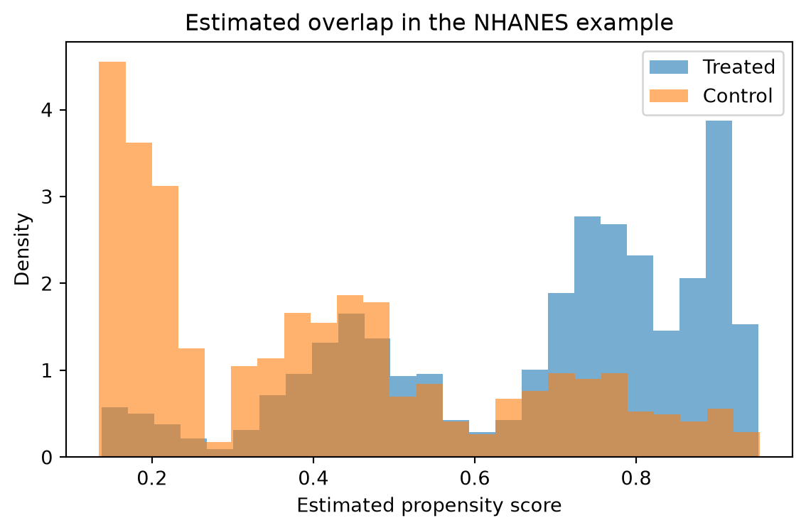
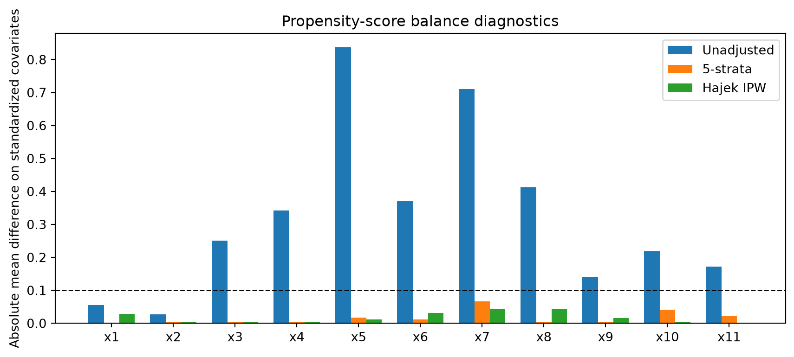

Show code
from pathlib import Path
import matplotlib.pyplot as plt
import numpy as np
import pandas as pd
import crabbymetrics as cm
np.set_printoptions(precision=4, suppress=True)
def expit(x):
return 1.0 / (1.0 + np.exp(-x))The central role of the propensity score
This translation keeps the chapter’s basic workflow:
data = pd.read_csv(Path("../data/ding") / "nhanes_bmi.csv")
y = data["BMI"].to_numpy(dtype=float)
d = data["School_meal"].to_numpy(dtype=np.int32)
feature_names = [
"age",
"ChildSex",
"black",
"mexam",
"pir200_plus",
"WIC",
"Food_Stamp",
"fsdchbi",
"AnyIns",
"RefSex",
"RefAge",
]
x = data[feature_names].to_numpy(dtype=float)
x = (x - x.mean(axis=0)) / np.where(x.std(axis=0) > 1e-12, x.std(axis=0), 1.0)
naive = cm.OLS()
naive.fit(d.astype(float)[:, None], y)
adjusted = cm.OLS()
adjusted.fit(np.column_stack([d.astype(float), x]), y)
lin_design = np.column_stack([d.astype(float), x, d[:, None].astype(float) * x])
lin = cm.OLS()
lin.fit(lin_design, y)
ps_model = cm.Logit(alpha=1.0, max_iterations=300)
ps_model.fit(x, d)
ps_summary = ps_model.summary()
pscore = expit(ps_summary["intercept"] + x @ np.asarray(ps_summary["coef"]))
quantiles = np.quantile(pscore, [0.2, 0.4, 0.6, 0.8])
quintile = np.digitize(pscore, quantiles, right=True)
def stratified_ate(y, d, strata):
total = 0.0
for level in np.unique(strata):
idx = strata == level
if np.any(d[idx] == 1) and np.any(d[idx] == 0):
total += idx.mean() * (y[idx & (d == 1)].mean() - y[idx & (d == 0)].mean())
return float(total)
stratified = stratified_ate(y, d, quintile)
def stratified_neyman(y, d, strata):
estimate = 0.0
variance = 0.0
for level in np.unique(strata):
idx = strata == level
treated_k = idx & (d == 1)
control_k = idx & (d == 0)
if not (treated_k.any() and control_k.any()):
continue
weight = idx.mean()
tau_k = y[treated_k].mean() - y[control_k].mean()
var_k = y[treated_k].var(ddof=1) / treated_k.sum() + y[control_k].var(ddof=1) / control_k.sum()
estimate += weight * tau_k
variance += weight**2 * var_k
return estimate, np.sqrt(variance)
def strata_from_score(score, n_strata):
cutpoints = np.quantile(score, np.arange(1, n_strata) / n_strata)
return np.digitize(score, cutpoints, right=True)
stratification_rows = []
for n_strata in [5, 10, 20, 50, 80]:
est, se = stratified_neyman(y, d, strata_from_score(pscore, n_strata))
stratification_rows.append({"strata": n_strata, "estimate": est, "se": se})
def ipw_estimates(y, d, pscore, lower=0.0, upper=1.0):
p = np.clip(pscore, lower, upper)
ht = float(np.mean(d * y / p - (1 - d) * y / (1 - p)))
hajek = float(
np.mean(d * y / p) / np.mean(d / p)
- np.mean((1 - d) * y / (1 - p)) / np.mean((1 - d) / (1 - p))
)
return ht, hajek
ipw_rows = []
for label, bounds in {
"none": (1e-6, 1.0 - 1e-6),
"0.01-0.99": (0.01, 0.99),
"0.05-0.95": (0.05, 0.95),
"0.10-0.90": (0.10, 0.90),
}.items():
ht, hajek = ipw_estimates(y, d, pscore, *bounds)
ipw_rows.append({"truncation": label, "HT": ht, "Hajek": hajek})
treated = d == 1
control = ~treated
bal = cm.BalancingWeights(objective="entropy", autoscale=True, max_iterations=300, tolerance=1e-8, l2_norm=0.02)
bal.fit(x[control], x[treated])
weights = np.asarray(bal.summary()["weights"])
att_bal = float(y[treated].mean() - np.dot(weights, y[control]))
pd.DataFrame(
{
"estimate": [
float(naive.summary()["coef"][0]),
float(adjusted.summary()["coef"][0]),
float(lin.summary()["coef"][0]),
stratified,
att_bal,
]
},
index=[
"Naive OLS",
"Fisher OLS",
"Lin OLS",
"Propensity-stratified ATE",
"Entropy-balancing ATT",
],
)| estimate | |
|---|---|
| Naive OLS | 0.533904 |
| Fisher OLS | 0.061248 |
| Lin OLS | -0.016954 |
| Propensity-stratified ATE | -0.115245 |
| Entropy-balancing ATT | -0.184490 |
fig, ax = plt.subplots(figsize=(6, 4))
ax.hist(pscore[d == 1], bins=25, density=True, alpha=0.6, label="Treated")
ax.hist(pscore[d == 0], bins=25, density=True, alpha=0.6, label="Control")
ax.set_xlabel("Estimated propensity score")
ax.set_ylabel("Density")
ax.set_title("Estimated overlap in the NHANES example")
ax.legend()
fig.tight_layout()
plt.show()
Quintile 1: n = 467, treated share = 0.1349
Quintile 2: n = 465, treated share = 0.4172
Quintile 3: n = 466, treated share = 0.5730
Quintile 4: n = 466, treated share = 0.7725
Quintile 5: n = 466, treated share = 0.8584The R script reports propensity-score subclassification for several numbers of strata, then compares Horvitz-Thompson and Hajek IPW under increasing propensity-score truncation. The estimates below use the same formulas.
| estimate | se | |
|---|---|---|
| strata | ||
| 5 | -0.115245 | 0.283263 |
| 10 | -0.177911 | 0.282360 |
| 20 | -0.192190 | 0.279109 |
| 50 | -0.287762 | 0.277245 |
| 80 | -0.196331 | NaN |
The balance diagnostic asks the same question as the R plots: after reducing the covariates to a scalar propensity score, do the residual treated-control differences in the original covariates shrink?
def hajek_balance(column, d, pscore):
p = np.clip(pscore, 1e-6, 1.0 - 1e-6)
treated_mean = np.mean(d * column / p) / np.mean(d / p)
control_mean = np.mean((1 - d) * column / (1 - p)) / np.mean((1 - d) / (1 - p))
return float(treated_mean - control_mean)
def stratified_balance(column, d, strata):
total = 0.0
for level in np.unique(strata):
idx = strata == level
treated_k = idx & (d == 1)
control_k = idx & (d == 0)
if treated_k.any() and control_k.any():
total += idx.mean() * (column[treated_k].mean() - column[control_k].mean())
return float(total)
balance_rows = []
for j, name in enumerate(feature_names):
balance_rows.append(
{
"covariate": name,
"unadjusted": float(x[treated, j].mean() - x[control, j].mean()),
"stratified": stratified_balance(x[:, j], d, quintile),
"hajek_ipw": hajek_balance(x[:, j], d, pscore),
}
)
balance = pd.DataFrame(balance_rows)
balance| covariate | unadjusted | stratified | hajek_ipw | |
|---|---|---|---|---|
| 0 | age | 0.055745 | 0.000400 | -0.028061 |
| 1 | ChildSex | -0.026365 | -0.003588 | -0.002667 |
| 2 | black | 0.250013 | -0.004957 | -0.003932 |
| 3 | mexam | 0.341891 | 0.004654 | -0.003997 |
| 4 | pir200_plus | -0.836903 | -0.017041 | 0.011753 |
| 5 | WIC | 0.370816 | 0.011726 | -0.030595 |
| 6 | Food_Stamp | 0.710649 | 0.066151 | -0.044231 |
| 7 | fsdchbi | 0.411863 | 0.003839 | -0.041801 |
| 8 | AnyIns | -0.138846 | 0.004704 | -0.016292 |
| 9 | RefSex | -0.219006 | -0.040892 | -0.005085 |
| 10 | RefAge | -0.171938 | -0.023001 | -0.000938 |
fig, ax = plt.subplots(figsize=(9, 4))
xpos = np.arange(len(feature_names))
width = 0.25
for offset, column, label in [
(-width, "unadjusted", "Unadjusted"),
(0.0, "stratified", "5-strata"),
(width, "hajek_ipw", "Hajek IPW"),
]:
ax.bar(xpos + offset, np.abs(balance[column]), width=width, label=label)
ax.axhline(0.1, color="black", linestyle="--", linewidth=1.0)
ax.set_xticks(xpos)
ax.set_xticklabels([f"x{j + 1}" for j in xpos])
ax.set_ylabel("Absolute mean difference on standardized covariates")
ax.set_title("Propensity-score balance diagnostics")
ax.legend()
fig.tight_layout()
The chapter’s message is still the right one: